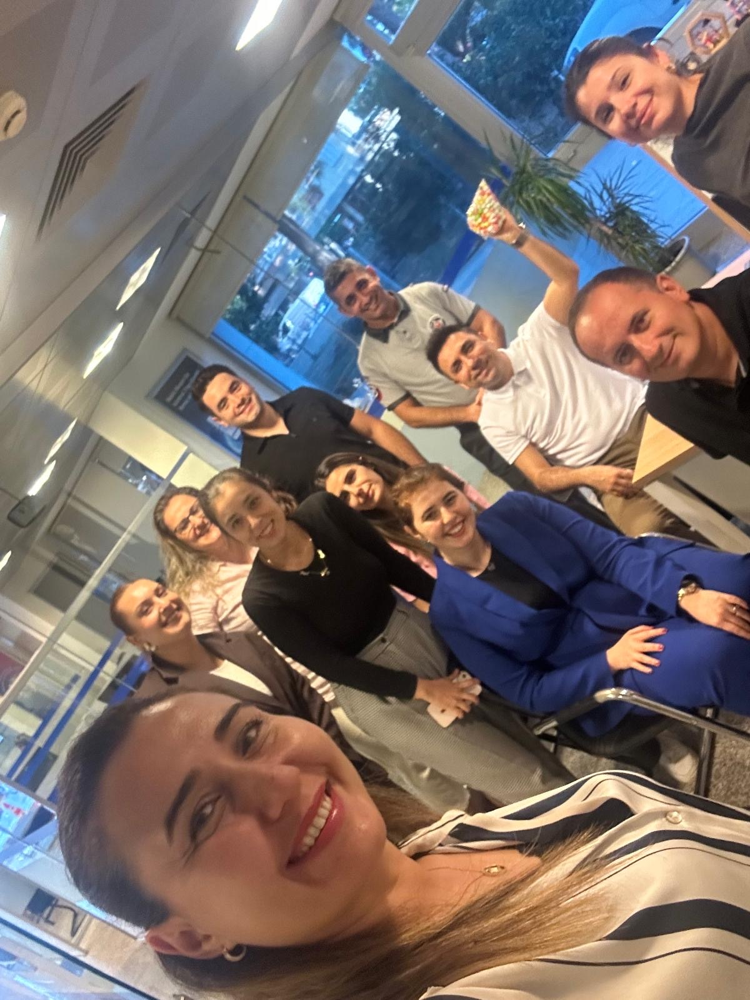

Şubelerimiz arasındaki tatlı rekabeti zirveye taşıyan Yıldızlar Arası Sigorta Kampanyası, ikinci hafta sonuçlarıyla yine heyecan dolu anlara sahne oldu. Birbirinden iddialı şubelerimizin kıyasıya mücadelesi, skor tabelasına adeta bir yıldız yağmuru gibi yansıdı. İşte haftanın öne çıkanları ve unutulmaz anları...
Haftanın Derbisi: Son Ana Kadar Heyecan Fırtınası!
Bu hafta iki karşılaşma, sonuçları ve mücadele seviyesiyle diğerlerinden bir adım öne çıktı.

Haftanın en çok konuşulan performanslarından birine imza atan Avsallar Şubesi, Serik Şubesi karşısında adeta fırtına gibi esti! Haftanın başladığı andan itibaren üstünlük kuran ve rakibine nefes aldırmayan Avsallar, 168-96'lık skorla sadece bir maç kazanmakla kalmadı, aynı zamanda tüm lige "Zirveye oynuyorum!" mesajını en net şekilde verdi. Bu dominant zafer, Avsallar'ın şampiyonluk yolundaki en ciddi adaylardan biri olduğunu kanıtlar nitelikteydi.
Haftanın en çekişmeli maçı şüphesiz Aliçetinkaya Şubesi ile Fener Şubesi arasında geçti. Skorun sürekli el değiştirdiği, son saniyesine kadar kimin kazanacağının belli olmadığı bu müthiş mücadeleden Fener Şubesi, 135-132'lik skorla kıl payı bir galibiyet çıkarmayı başardı. Bu heyecan dolu kapışma, izleyenlere adeta bir final maçı heyecanı yaşattı.
Bu hafta sadece skor tabelasındaki başarılar değil, aynı zamanda finansal hedeflerdeki performanslar da ödüllendirildi. Alanya Oba Şubesi ve Hal Şubesi, "BES Ciro" kaleminde gösterdikleri üstün başarı sayesinde hanelerine ekstra 3'er puan yazdırmayı başardı. Bu stratejik başarılarıyla genel sıralamada önemli bir avantaj yakalayan iki şubemizi de gönülden tebrik ediyoruz!